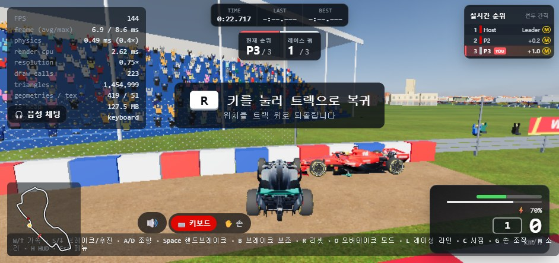

Draw2World AI
상상을 3D로,
3D를 디지털과 현실로
이미지와 자연어로 하나의 3D 자산을 만들고, 목적에 맞게 가공해 캐릭터 인터랙션·게임·3D 프린팅으로 연결하는 AI 3D 제작 플랫폼
SSAFY 프로젝트 발표 · 2026.10
3D 자산AI 추정 초안
→ 확인·수정
01 · 문제
3D는 만들기도, 쓰기도 어렵다
- 높은 진입장벽모델링·리깅·최적화마다 다른 전문 도구와 숙련이 필요하다
- 이미지에 없는 정보그림 한 장에는 뒷면·옆면·깊이가 없다 — 누군가는 추정해야 한다
- 생성 이후의 단절3D가 나와도 리깅·충돌체·출력 검사는 다시 수작업이다
“생성은 됐는데, 이걸 어디에 어떻게 쓰지?”
02 · 해법
하나의 파이프라인, 세 가지 결과
공통 AI 3D 제작 파이프라인
목적별 출력 프로필
완료 main 브랜치에 구현·테스트 진행 중 작업 브랜치·부분 구현 계획 미구현 — 이후 모든 슬라이드에 같은 기준 적용
03 · 사용자 경험
그리고, 말하고, 확인한다
1이미지 입력그림·사진 한 장 또는 여러 방향 이미지
AI 추정 초안
2다방향 설계도 초안보이지 않는 면은 AI가 추정 → 사용자가 확인
귀를 조금 짧게
차체를 낮게
폭을 10% 늘려줘
width × 1.10 적용 · v3 저장
3자연어로 수정요청은 검증 가능한 명령으로 변환 진행 중
43D 생성·확인원본 5면과 겹쳐 비교한 점수 함께 표시
결과는 “완벽한 3D 복원”이 아니라 AI가 추정한 3D 초안입니다. 사용자가 보고, 고치고, 확정합니다.
04 · 핵심 아이디어
왜 ‘설계도’부터 만드는가
| 뷰 | 결정하는 치수 | 축 |
|---|---|---|
| 정면 | 폭 · 높이 | X · Y |
| 측면 | 깊이 · 높이 | Z · Y |
| 상단 | 폭 · 깊이 | X · Z |
| 공유 축은 뷰끼리 서로 검증 — 어긋나면 생성 전에 경고 | ||
vs
99.32%합성 구(sphere) 5면 → 복원 후 실루엣 IoU합성 GT 회귀 · 2026-10-13 · 작업 브랜치
곡면 보정캐릭터 모드: 수평 단면을 정면 폭 × 측면 깊이에 내접하는 타원으로 제한
한계 어느 방향에서도 보이지 않는 오목부(컵 안쪽, 콕핏 안쪽)는 채워진다 — 원리적으로 실루엣만으로는 알 수 없는 영역이며, 추정임을 표시한다.
05 · 기술 구조
모델마다 맡은 역할이 있다
입력·이해
정렬·검증
3D 생성
편집·품질
활용
로컬 GPU 추론 RTX 4060 8GB에서 LLM 실측 — 최대 VRAM 2,963.8 MiB, 외부 LLM API 없음
라이선스 점검 Hunyuan3D-2mv는 커뮤니티 라이선스상 한국 지역이 제외되어 기본 비활성, 기본 공급자는 TRELLIS
06 · 자연어 편집
LLM은 버텍스를 만들지 않는다
- 자연어 요청“폭을 10% 늘려줘”
- 구조화 명령 JSON로컬 LLM이 DesignSpec만 생성 — 코드 실행 없음
- 범위·제약 검증단위 mm · 0.1~10,000mm · ID 중복 · 참조 무결성
- 결정론적 형상 변경CadQuery가 같은 명세 → 같은 형상
- 버전 이력필드별 diff · SQLite 저장 · 이전 버전 복원
DesignSpec (요약)
{
"schema_version" : "1.0",
"unit" : "mm",
"name" : "desk",
"parts" : [{
"id" : "top",
"primitive" : "box",
"dimensions" : {
"x" : 12001320,
"y" : 600, "z" : 25
},
"position" : { "x" : 0, "y" : 0, "z" : 725 }
}, …]
}diff v2 → v3 · parts[top].dimensions.x 1200 → 1320
잘못된 요청은 거절한다
부품 id 가 중복입니다: 'legs'
치수는 0.1mm 이상이어야 합니다
80% → 90%자연어 → 유효 DesignSpec 성공률 (20문항, 1차 → 교정 재시도 포함)로컬 Qwen2.5-1.5B · RTX 4060 · 2026-10-14
완료 원시 형상 CAD — 박스·원기둥·불리언, STL/STEP계획 이미지 기반 자산(귀·차체)에 같은 구조 연결
07 · 품질
생성 성공 ≠ 사용 가능
| 검사 항목 | 무엇을 보나 | 상태 |
|---|---|---|
| 재투영 일치 | 5면 원본 vs 재렌더 실루엣 IoU · 색 일치도 | 완료 |
| 비다양체(non-manifold) | edge 수 감지 → Manifold 재추출 | 진행 중 |
| 구멍(경계 edge) | 열린 경계 edge 수 | 진행 중 |
| 분리 조각 | 연결 성분 수 · 퇴화 삼각형 | 진행 중 |
| 중심·크기 | 공통 XYZ 배율·중심 자동 보정 | 진행 중 |
| 폴리곤 수 | 삼각형 수 기록 / 감량은 계획 | 진행 중 |
| 노멀 · 바닥면 | 법선 방향 일관성 · 접지면 정렬 | 계획 |
접합부 보정 전후 · 실물 5면 세트(투명 고양이)
336→0
94.9%→94.88%
20.3s→26.63s
형상 점수 유지(85.0 → 85.03%), 삼각형 593,740 → 768,214개. 결함이 감지된 메시에서만 실행.
품질 보고서를 결과와 함께 준다 — “만들어졌다”가 아니라 “어디에 써도 되는가”를 알려주는 것이 차별점
출력 프로필 A 캐릭터
내 그림이 내 동작을 따라 한다
- 공통 파이프라인3D 캐릭터 자산
- 관절 지정사용자가 확인·수정계획
- 리깅자동(UniRig 후보) · 수동계획
- MediaPipe손 인식 완료 · 몸 인식진행 중
- 미니게임내 캐릭터로 플레이계획
11 ms손 랜드마크 추출 p50 (p95 31 ms)MediaPipe 샘플 손 사진 · 가짜 카메라 · headless Chrome
37 ms프레임 → 명령 p95One Euro 필터 + 3프레임 유지 상태 머신
검증 범위 합성·샘플 데이터 기준. 실제 사람 손 녹화(7명 × 4동작 × 조명 3)는 수집 예정. 자동 리깅 후보 UniRig는 8GB+ VRAM 요구로 현 6GB GPU에서 미검증.
출력 프로필 B 차량·게임 자산
만든 차가 실제로 달리는가
- 공통 파이프라인차량 이미지 → 설계도 → 3D
- 자연어 수정“차체를 낮게”진행 중
- 게임용 변환크기·방향·폴리곤(LOD)계획
- 충돌체박스 콜라이더 + 레이캐스트 휠계획
- 레이싱물리·AI·손 조향 환경완료


- 20대 AI 레이스 헤드리스 테스트 전원 완주 · 물리+AI 스텝당 약 2ms
- 손 조향 MediaPipe Hand Landmarker로 보이지 않는 핸들 조작
- 자산 규격 GLB · 차체 1 + 바퀴 4 노드 · 미터·Y-up · LOD 2단
범위 레이싱은 생성 자산의 사용 가능성 검증 무대. 생성 차량 연결은 외형 교체 방식이 문서화된 단계이며, 주행 성능은 형상이 아닌 수치 스펙에서 온다.
출력 프로필 C 3D 프린팅
같은 자산을 손에 쥐는 모형으로
- 공통 파이프라인같은 3D 자산
- 출력용 검사수밀·두께·크기·바닥진행 중
- STL 변환mm 단위 정규화완료
- 미니어처 출력캐릭터·차량 모형계획
| 출력 전 검사 | 기준 | 상태 |
|---|---|---|
| Watertight | 경계 edge 0 (구멍 없음) | 진행 중 |
| Non-manifold | 비다양체 edge 0 | 진행 중 |
| 실제 크기 | 내부 단위 mm, 치수 오차 검사 | 완료 |
| 최소 두께 | 노즐 기준 얇은 부위 경고 | 계획 |
| 바닥면 | 접지면 평탄화·정렬 | 계획 |
기계 부품 수준의 정밀 CAD가 아니다. 캐릭터·차량 미니어처 출력부터 시작한다 — AI 메시는 CAD 솔리드로 취급하지 않는다.
08 · 검증
측정한 것만 말한다
합성 정답 5종 · 복원 실루엣 IoU 2026-10-13 · 작업 브랜치
5종 모두 비다양체 edge 0 · 축 시작 95%
크기·중심 자동 보정 전후 실물 로봇 5면 세트
텍스처 점수 하락도 그대로 보고 — 형상과 텍스처를 같은 점수로 주장하지 않음
자연어 → 설계 명세 성공률 20문항 · Qwen2.5-1.5B · RTX 4060
실패 2건: 네 다리 책상의 부품 ID 중복 — 명시적 실패로 기록
측정 예정
- GrabCut vs SAM2 — 마스크 IoU · 처리 시간 · VRAM
- 이미지→3D 모델별 처리 시간 · VRAM · 사용 가능률
- 실제 사용자 그림 평가셋 사용 가능률
한계 현재 수치는 합성·샘플 데이터 중심. 실제 사용자 그림과 사람 손 데이터 검증이 추가로 필요하다.
5면 정렬·검증 · 실루엣/AI 복원 · 재투영 채점 · 자연어→CAD·이력 · 손 인식 · 레이싱 환경 · STL
토폴로지 검사·Manifold 보정 · 자동 크기·중심 보정 · 자산 자연어 편집 연결
SAM2 비교 · 리깅·미니게임 · 차량 변환·충돌체 · 두께·바닥 검사 · 실물 출력
09 · 비전
하나의 3D 자산, 여러 현실
캐릭터는 몸으로 움직이고
차량은 게임에서 달리고
모델은 실물로 출력된다
Draw2World AI는 3D를 생성하는 도구를 넘어,
사용자의 상상을 디지털 경험과 현실의 결과물로 연결합니다.